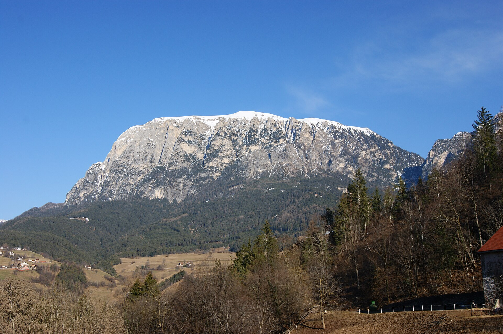
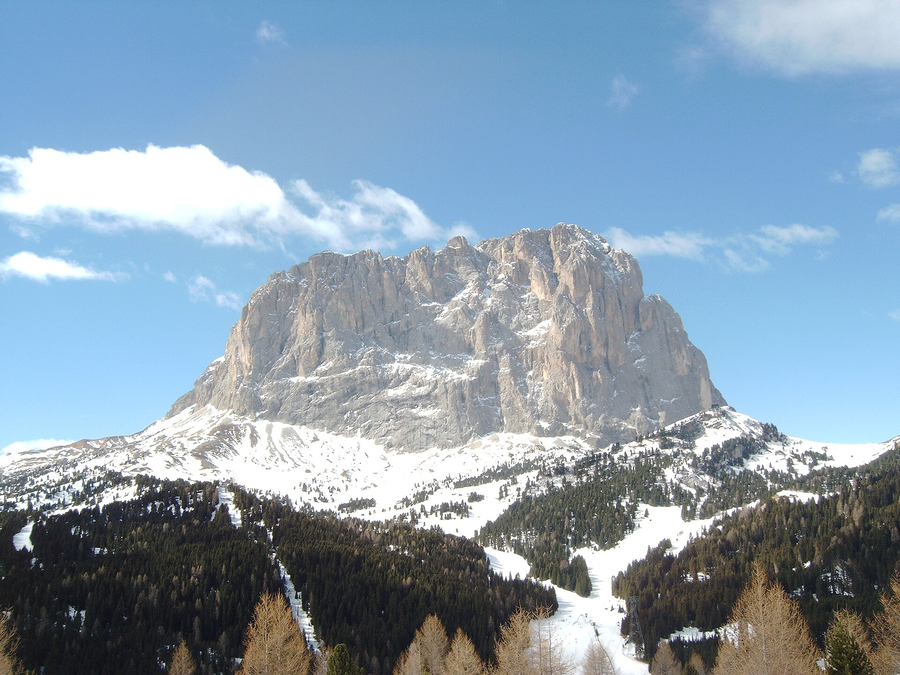

海拔 1,700-2,400 米的高山草甸，56 平方公里--欧洲最大。Sassolungo 与 Sciliar 山群环抱的巨大天然牧场，春季野花、夏季绿草、10 月初金黄。从 Ortisei 有直达缆车（约 20 分钟），或从 Siusi 开车到 Compatsch 停车场再上。禁止自驾穿越草甸（环保管制），缆车 + 徒步是唯一方式。
看点路线
Il Percorso
- 1Ortisei 坐缆车上高原：出站即是全景草甸 + Sassolungo
- 2环线徒步（4h）：缆车站 → Compatsch → Rifugio Molignon → 回程
- 3Sciliar 山（2,563m）：草甸西侧的标志性平顶山
- 410 月初：草甸变金色 + 牛群下山前最后的放牧季
草甸与徒步
Seiser Alm · 5 个看点

56 平方公里的花海与牧场
比整个圣马力诺共和国还大的高山草甸：春季雪绒花与龙胆紫、夏季绿浪、10 月初金黄一片。从 Ortisei 缆车出站的第一眼：整片草甸在脚下展开，远处 Sassolungo 像一堵石墙。

Sciliar（Schlern）
草甸西侧的平顶石灰岩山，南蒂罗尔的"圣山"--出现在当地传说与中世纪文献中。从草甸多数位置可见，是 Alpe di Siusi 的视觉锚点。
环线徒步
经典环线：缆车站 → 向西沿 Trail 7 → Compatsch → Rifugio Molignon → Trail 9 折返。大部分为缓坡草甸路，适合各种体力。沿途多处山区餐厅可休息午餐。

Sassolungo / Sassopiatto 山群
草甸北侧的两座巨型石灰岩：Sassolungo（长石峰，3,181m）与 Sassopiatto（平石峰）。10 月下午的侧光最戏剧化：白云岩面被染成金色。
环保管制与"无车草甸"
整个草甸禁止自驾（除持证居民与酒店住客）：这是 1970 年代环保运动的成果，让 Alpe di Siusi 保持了欧洲最大无机动车高山区域的身份。自驾者停 Compatsch 停车场（€10-15/天）。
历史故事
Le Storie
壹欧洲最大的草甸是怎么来的
Alpe di Siusi 的巨大面积（56 平方公里）来自冰川：末次冰期（约 1 万年前）的冰川从 Sassolungo 与 Sciliar 之间的台地上刮走了所有松软岩层，只留下一个平缓的石灰岩基底。
冰川退去后，牧民在 1,700-2,400 米的缓坡上放牧--已经持续了至少两千年。今天的草甸是自然地质与千年放牧的共同作品：牛群的踩踏与施肥保持了草皮，阻止了灌木入侵。
贰禁车令的诞生
1970 年代以前，Alpe di Siusi 上可以自由开车。随着旅游业爆发，草甸面临被"车道化"的危机。
1970 年代，南蒂罗尔政府与当地农民协会达成协议：整个草甸禁止机动车（除持证居民与住客）。今天你要么坐缆车上山、要么把车停在 Compatsch 停车场步行入草甸。这个决定让 Alpe di Siusi 保持了"欧洲最大无机动车高山区域"的身份。
叁Sciliar：山中的传说
草甸西侧的 Sciliar（Schlern）山（2,563m）是南蒂罗尔最富传说的山：中世纪的文献里它是"女巫聚会的场所"--平顶的山形在云雾中确实有超自然感。
拉定民间故事里，Sciliar 山顶住着"Salvan"（森林精灵）与"Ganes"（水仙女），他们守护着草甸与牧群。今天你走到 Sciliar 山脚下的 Rifugio Santeria 时，看看那块解释传说群的标牌--孩子们最爱的一段徒步。
肆牛群下山节（Almabtrieb）
每年 9 月底至 10 月中，是山区最热闹的"牛群下山节"（Almabtrieb）：在草甸上度过整个夏天的牛群被赶回谷地过冬。
领头牛被戴上花环与巨大的牛铃，牧民穿着传统服装，山谷居民聚在路边看"牛的凯旋游行"。Ortisei 与 Siusi 都会举办。如果你 10 月上旬在多洛米蒂，打听一下 Almabtrieb 的日期--它是阿尔卑斯最古老、最真实的仪式之一。
伍春季的野花
5-6 月是草甸的花季：雪绒花（edelweiss）、高山龙胆（gentiana）、仙女木（dryas）与亚平宁番红花（crocus）依次开放。冰川刚退去时就有的高山植物--有些物种是冰河时期的孑遗。
10 月的草甸虽然没有花，但金色草浪在风中翻滚的画面，比任何花园都更有生命力。晨光下的露珠挂满蛛网，是微距摄影师的天堂。
陆从 Compatsch 到 Molignon
草甸上最经典的徒步路线：Compatsch（缆车/停车场，1,860m）→ Trail 7 向西 → Rifugio Molignon（2,030m）→ Trail 9 折返。往返约 4 小时。
沿途：左侧 Sciliar 山始终可见，右侧 Sassolungo 群越走越近。Molignon 山屋的露台正对 Sassopiatto 的西壁--午后侧光最好。10 月这段路上人很少，可能整段路只遇到几头牛。
柒草甸上的农庄住宿
Alpe di Siusi 上有约 20 家农庄客栈（Agriturismo / Bauernhof）：住在草甸上意味着清晨推开窗就是 Sassolungo 的日出，傍晚在牛铃声中入睡。
这类住宿通常含半 board（早 + 晚餐）：晚餐是农场自产的奶酪、Speck 与苹果卷。10 月部分农庄已关门（主人下山过冬），但仍有几家全年开放。需要自驾或在 Compatsch 转小巴。
捌缆车的两种上法
上 Alpe di Siusi 有两种方式：A) 从 Ortisei 坐缆车（Ortisei-Alpe di Siusi gondola，约 20 分钟，往返 €30）；B) 从 Siusi 开车到 Compatsch 停车场（€10-15/天），步行入草甸。
推荐 A：缆车途中俯瞰整个 Val Gardena 山谷，20 分钟的"空中观景"。出站即是全景视角，不需要再爬升。但如果计划在草甸上走一整天，自驾到 Compatsch 可以灵活选择起点。
玖Sciliar 的日落
从草甸看日落：太阳从 Sassolungo 方向落下，Sciliar 的平顶山变成剪影，草甸被染成金色渐变到紫红色。
最佳观赏位置：Compatsch 附近的西向缓坡，或缆车站西侧的观景长椅。10 月日落约 18:15（夏令时结束后 17:15）--注意缆车末班时间，别在草甸上过夜。
拾冬天它变成什么
11 月中旬起，Alpe di Siusi 变成滑雪场：约 60km 的雪道覆盖整个草甸，从 Ortisei 和 Siusi 都有缆车直达。
滑雪季从 12 月到 3 月。但 11 月-12 月初之间有一个"无人季"：缆车停运、雪不够滑、草甸被白雪覆盖--如果你碰巧在这个窗口来，可以看到一个完全无人、只有风声的白色平原。这大概是多洛米蒂最安静的时刻。
参观贴士
Consigli Pratici
- 10 月注意：牛群 9 月底-10 月中下山（Almabtrieb），部分餐厅随之关闭；但草甸金黄 + 人少，反而是徒步最佳季
- 从 Ortisei 缆车站（Ortisei-Alpe di Siusi）步行 5 分钟可达；自驾者走 SP63 到 Compatsch 停车场
- 草甸风大：冲锋衣 + 帽子必备；10 月草甸上 0-10°C
- 带现金：部分山区小屋（Rifugio）不接受刷卡
- 清晨最美：薄雾 + 牛铃声 + 日出打在 Sassolungo 上--缆车首班前可在 Compatsch 观景台拍
- 秋季最后一班缆车约 17:00，别错过
顺路同游
Da Non Perdere